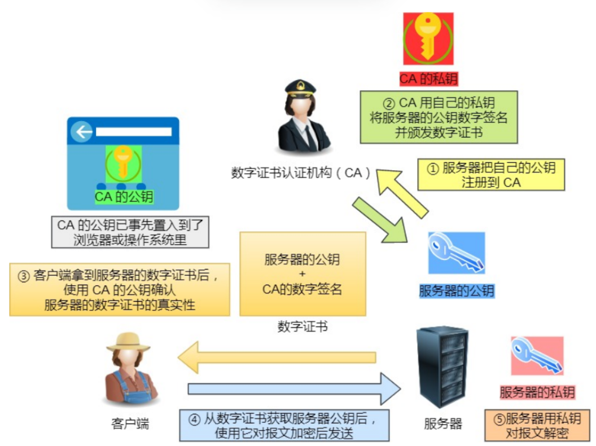
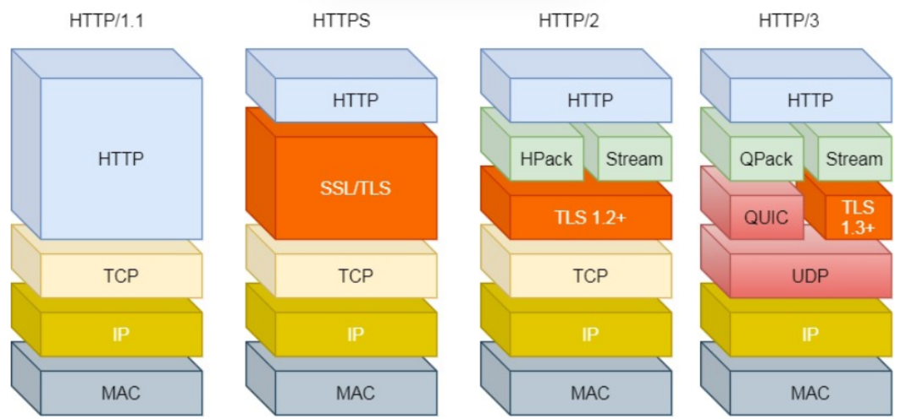

概念
HTTP 是⼀个在计算机世界⾥专⻔在「两点」之间「传输」⽂字、图⽚、⾳频、视频等「超⽂本」数据的「约定和 规范」。
是什么
报文
| 方法 get：获取资源。 post：传输内容实体。 put：传输文件。 head：与get类似，不返回内容主体。 | URI | 协议版本 |
|---|---|---|
| 可选的首部字段 | ||
| 内容实体 |
| 协议版本 | 状态码 | 状态码原因短语 |
|---|---|---|
| 可选的响应首部字段 | ||
| 主体 |
状态码
1xx 类状态码属于提示信息，是协议处理中的⼀种中间状态，实际⽤到的⽐较少。
2xx 类状态码表示服务器成功处理了客户端的请求，也是我们最愿意看到的状态。
- 「200 OK」是最常⻅的成功状态码，表示⼀切正常。如果是⾮ HEAD 请求，服务器返回的响应头都会有 body 数据。
- 「204 No Content」也是常⻅的成功状态码，与 200 OK 基本相同，但响应头没有 body 数据。
- 「206 Partial Content」是应⽤于 HTTP 分块下载或断点续传，表示响应返回的 body 数据并不是资源的全部，⽽ 是其中的⼀部分，也是服务器处理成功的状态。
3xx 类状态码表示客户端请求的资源发送了变动，需要客户端⽤新的 URL 重新发送请求获取资源，也就是重定向。
- 「301 Moved Permanently」表示永久重定向，说明请求的资源已经不存在了，需改⽤新的 URL 再次访问。
- 「302 Found」表示临时重定向，说明请求的资源还在，但暂时需要⽤另⼀个 URL 来访问。 301 和 302 都会在响应头⾥使⽤字段 Location ，指明后续要跳转的 URL，浏览器会⾃动重定向新的 URL。
4xx 类状态码表示客户端发送的报⽂有误，服务器⽆法处理，也就是错误码的含义。
- 「400 Bad Request」表示客户端请求的报⽂有错误，但只是个笼统的错误。
- 「403 Forbidden」表示服务器禁⽌访问资源，并不是客户端的请求出错。
- 「404 Not Found」表示请求的资源在服务器上不存在或未找到，所以⽆法提供给客户端。
5xx 类状态码表示客户端请求报⽂正确，但是服务器处理时内部发⽣了错误，属于服务器端的错误码。
- 「500 Internal Server Error」与 400 类型，是个笼统通⽤的错误码，服务器发⽣了什么错误，我们并不知道。
- 「501 Not Implemented」表示客户端请求的功能还不⽀持，类似“即将开业，敬请期待”的意思。
- 「502 Bad Gateway」通常是服务器作为⽹关或代理时返回的错误码，表示服务器⾃身⼯作正常，访问后端服务器 发⽣了错误。
- 「503 Service Unavailable」表示服务器当前很忙，暂时⽆法响应服务器。
字段
Host 字段 客户端发送请求时，⽤来指定服务器的域名。
服务器在返回数据时，会有 Content-Length 字段，表明本次回应的数据⻓度。
Connection 字段最常⽤于客户端要求服务器使⽤ TCP 持久连接，以便其他请求复⽤。
Content-Type 字段⽤于服务器回应时，告诉客户端，本次数据是什么格式。
Content-Encoding 字段说明数据的压缩⽅法。表示服务器返回的数据使⽤了什么压缩格式
get post
区别？
Get ⽅法的含义是请求从服务器获取资源，这个资源可以是静态的⽂本、⻚⾯、图⽚视频等。
POST ⽅法则是相反操作，它向 URI 指定的资源提交数据，数据就放在报⽂的 body ⾥。⽐如，留⾔后点击「提交」，浏览器就会执⾏⼀次 POST 请求，把你的留⾔⽂字放进了报⽂ body ⾥，然后拼接好 POST 请求头，通过 TCP 协议发送给服务器。
安全幂等？
在 HTTP 协议⾥，所谓的「安全」是指请求⽅法不会「破坏」服务器上的资源。
所谓的「幂等」，意思是多次执⾏相同的操作，结果都是「相同」的。
那么很明显 GET ⽅法就是安全且幂等的，因为它是「只读」操作，⽆论操作多少次，服务器上的数据都是安全的，且每次的结果都是相同的。POST 因为是「新增或提交数据」的操作，会修改服务器上的资源，所以是不安全的，且多次提交数据就会创建多个资源，所以不是幂等的。
https
| http | 不安全 | 三次握手 | 80端口 | |
|---|---|---|---|---|
| https | 安全（SSL/TSL） | 三次握手+SSL握手 | 443端口 | 需要向CA申请数字证书 |
解决了啥？
窃听-信息加密
篡改-校验
冒充-身份证书
如何解决不安全的问题？
混合加密
对称加密（只有一个密钥，速度快）（通信过程中）+非对称加密（两个密钥）（通信建立前）
摘要算法实现完整性：每份数据都生成独一无二的指纹。
服务器公钥放到数字证书中

http1-2-3
1.1
长连接
管道传输
不能压缩首部，只能压缩body。
首部冗长。
队头阻塞。（服务器按照请求顺序响应）
无请求优先级控制。
请求只能从客户端开始。
2
基于https-安全
头部压缩：HPACK算法：双方维护一个头部信息表，发送索引。
二进制格式而不是文本。头信息帧，数据帧。
在二进制分帧层上，HTTP 2.0 会将所有传输的信息分割为更小的消息和帧,并对它们采用二进制格式的编码 ，其中HTTP1.x的首部信息会被封装到Headers帧，而我们的request body则封装到Data帧里面。
然后，HTTP 2.0 通信都在一个连接上完成，这个连接可以承载任意数量的双向数据流。相应地，每个数据流以消息的形式发送，而消息由一或多个帧组成，这些帧可以乱序发送，然后再根据每个帧首部的流标识符重新组装。
数据流，可指定优先级。
多路复用：一个连接中可以并发多个请求，不用按照顺序一一回应==解决了队头阻塞，降低延迟。
服务器推送。
复用一个TCP连接，下层的TCP不知道有几个http请求，发生丢包，就会触发重传机制。所有的http请求都必
须等待这个包的重传（阻塞）。
3
TCP===UDP
基于UDP的QUIC协议，可以实现类似的可靠传输。
